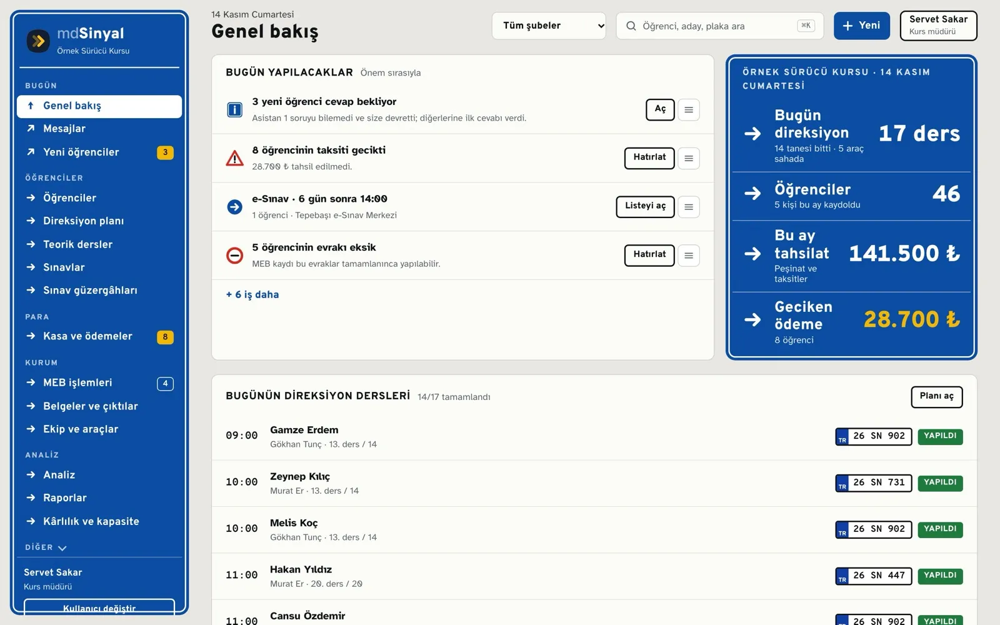
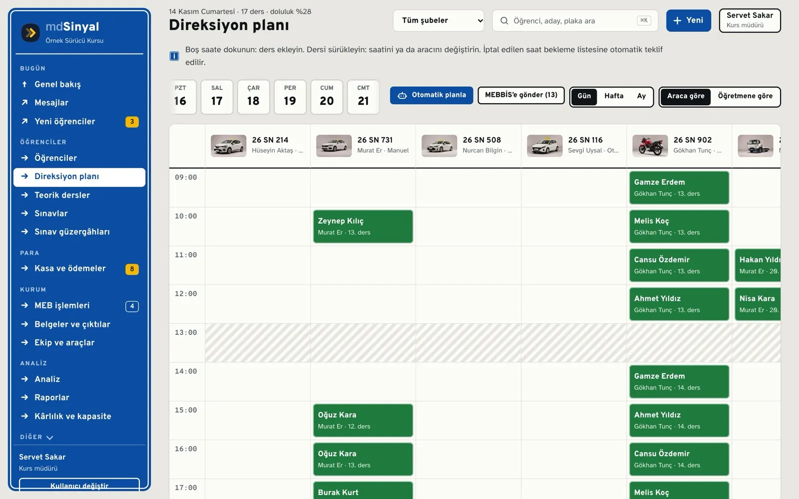
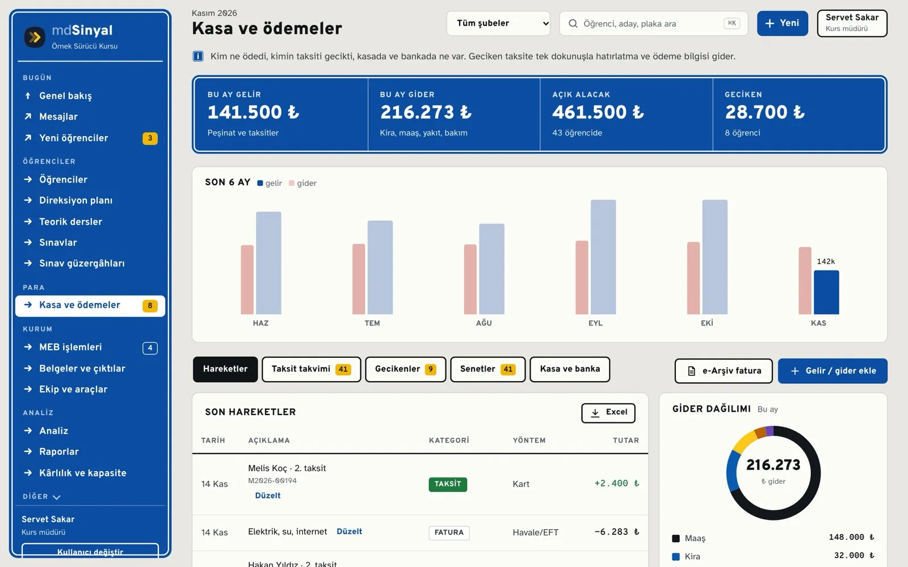
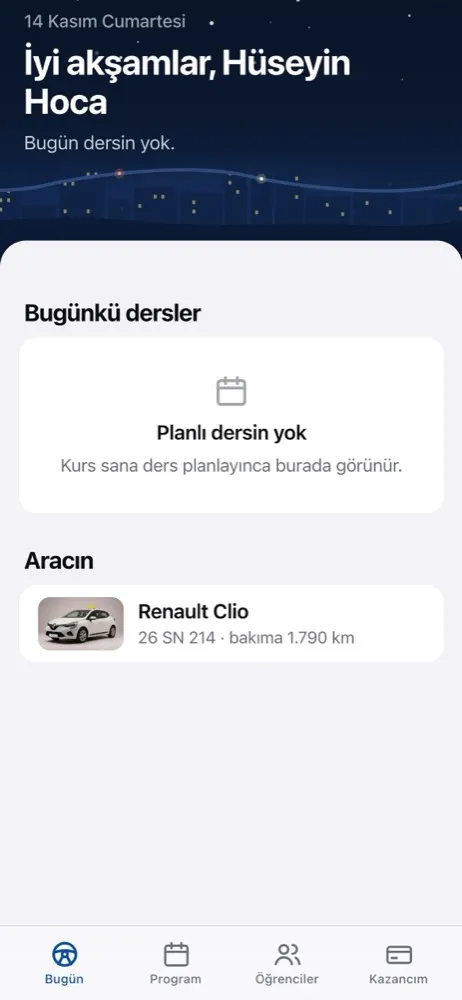
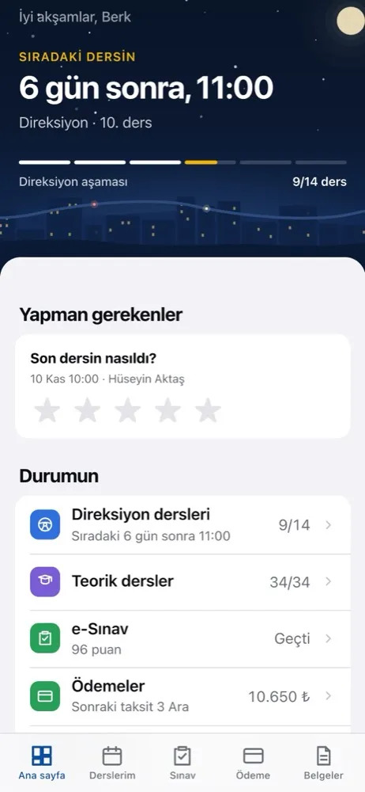

Kurs müdürü
Genel bakış, tahsilat, raporlar, MEB işleri ve ayarlar. Her işin kimin tarafından yapıldığı kayıt altındadır.
Sürücü kursu yönetim programı
Öğrenci kaydından direksiyon planına, tahsilattan MEBBİS işlemlerine kadar kursunuzun bütün süreçleri mdSinyal’de. Kurulum ve kayıt aktarımı bir günde tamamlanır.

Modüller
Ders ve taksit hatırlatmaları kursunuzun numarasından gider; ders değişikliğinde uygun saat önerilir, bütün mesajlar tek kutuda.
Peşinat, taksit, ek ve özel ders ücretleri tek ekranda. Geciken ödemeler listelenir; makbuz ve hesap dökümü hazırdır.
Araç ve öğretmen bazında günlük program. Günlük ders sınırı, muayene ve belge süreleri planlarken denetlenir.
Aday ve ders kayıtları MEBBİS formlarına hazırlanır; Chrome eklentisi formu doldurur, onayı kurs yetkilisi verir.
Tahsilat, kayıt, sınav başarısı ve araç verimliliği aylık ve yıllık olarak izlenir.
Öğrenci e-Sınav sorularını telefondan çözer; hazırlık düzeyi kurs müdürüne raporlanır.
Mevzuat asistanı
MTSK Yönetmeliği, e-Sınav kılavuzu ve MEB yazılarından dayanağıyla, kısa ve adım adım cevap. Her satırın kaynağını açıp okursunuz; rakam kaynakta yoksa uyarır, bilmediğini söyler.
Direksiyon planı
Boş saate dokunun, öğrenciyi seçin. Günlük ders sınırı, aracın muayene ve sigorta tarihleri, öğretmenin belge süreleri planlarken denetlenir; sorun varsa ders eklenmeden önce uyarı çıkar.

Kasa ve tahsilat
Taksit planı kayıtta oluşur, her ödemeye makbuz kesilir. Geciken taksitler, günün tahsilatı ve toplam alacak anlık görünür; hatırlatmalar öğrenciye kursun WhatsApp numarasından gider.

Kullanıcılar
Kurs ekibi bilgisayardan, öğretmen ve öğrenci telefondan kullanır. Yetkiler role göre ayrılır.
Genel bakış, tahsilat, raporlar, MEB işleri ve ayarlar. Her işin kimin tarafından yapıldığı kayıt altındadır.
Öğrenci kaydı, evrak, ödeme alma, direksiyon planı ve öğrenciyle yazışma.
Günün dersleri, öğrenci imzası, haftalık program ve kazanç. Yalnız kendi öğrencilerini görür.
Dersler, ödeme planı, sınav hazırlığı ve belgeler. Ders değişikliğini kendisi ister.
Telefon ekranları
Kurulum gerektirmez; telefonun ana ekranına eklenince uygulama gibi açılır.


Neden mdSinyal
Sürücü kurslarının eski programlarda en çok şikâyet ettiği yerleri baştan farklı yaptık.
Şifre istenmez, görülmez, saklanmaz. Yardımcı yalnız kurs yetkilisinin kendi açtığı MEBBİS oturumunda, onay verdiği kayıtları yazar.
Windows programı, sunucu bilgisayar ya da masaüstü uygulaması gerekmez. Bilgisayarda Chrome ya da Edge, telefonda tarayıcı yeter.
Bütün kayıtları Excel’e ve tam yedeğe istediğiniz an kendiniz indirirsiniz; belgeler, fotoğraflar ve imzalar dahil. Kimseye sormanız gerekmez.
Alınan ödeme sıradaki taksite kendiliğinden işlenir, ayrı borç açılmaz. Yanlış alınan ödeme gerekçesiyle iptal edilir, kayıtta kalır.
Makbuz, sözleşme ve listeler önce ekranda açılır; sonra yazdırılır ya da PDF olarak kaydedilir. Sayfa kilitlenmez.
Mevzuat sorusu resmî maddesiyle yan yana cevaplanır; mevzuat değişince ne yapmanız gerektiği ve son tarihi bildirilir.
Belgeleriniz, yedekleriniz ve MEBBİS girişiniz hakkında sorulması gereken soruların cevapları →
Geçiş süreci
Kursunuza gelir, mdSinyal’i kendi işleyişinize göre gösteririz. Şube ve araç sayınıza göre teklif veririz.
Mevcut programınızdaki öğrenci, ödeme ve ders kayıtlarını biz aktarırız. Geçiş genellikle bir gün sürer.
Müdür, ön büro ve öğretmenlere kendi ekranlarını gösteririz. Sonrasında sorularınızı WhatsApp’tan yanıtlarız.
mdSinyal’i kendi kayıtlarınızla gösterelim. Görüşme ücretsizdir, yaklaşık 30 dakika sürer.
mdSinyal açılıyor